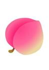

| ID | Name |
|---|---|
| 1 | X1 |
这是一个普通的段落

段落选择器用于选取属于其父元素的首个子元素的指定选择器选择器用于选取属于其父元素的首个子元素的指定选择器。选择器用于选取属于其父元素的首个子元素的指定选择器。选择器用于选取属于其父元素的首个子元素的指定选择器。选择器用于选取属于其父元素的首个子元素的指定选择器。选择器用于选取属于其父元素的首个子元素的指定选择器。选择器用于选取属于其父元素的首个子元素的指定选择器。选择器用于选取属于其父元素的首个子元素的指定选择器。选择器用于选取属于其父元素的首个子元素的指定选择器。选择器用于选取属于其父元素的首个子元素的指定选择器。选择器用于选取属于其父元素的首个子元素的指定选择器。选择器用于选取属于其父元素的首个子元素的指定选择器。
段落选择器用于选取属于其父元素的首个子元素的指定选择器选择器用于选取属于其父元素的首个子元素的指定选择器。选择器用于选取属于其父元素的首个子元素的指定选择器。选择器用于选取属于其父元素的首个子元素的指定选择器。选择器用于选取属于其父元素的首个子元素的指定选择器。选择器用于选取属于其父元素的首个子元素的指定选择器。选择器用于选取属于其父元素的首个子元素的指定选择器。选择器用于选取属于其父元素的首个子元素的指定选择器。选择器用于选取属于其父元素的首个子元素的指定选择器。选择器用于选取属于其父元素的首个子元素的指定选择器。选择器用于选取属于其父元素的首个子元素的指定选择器。选择器用于选取属于其父元素的首个子元素的指定选择器。